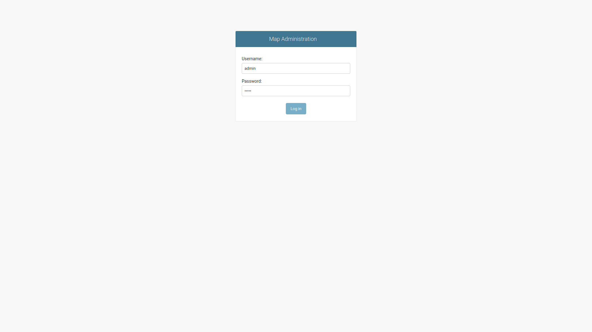
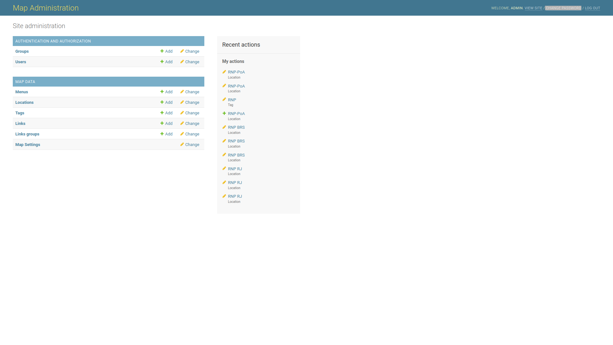

The first step for the administrator of the system is to get access in the backend management system. SInce already there is a installed and running instance of the Chameleon Map, the administration section can be accessed by the running instance url added by "/admin". Then, like in the image bellow, it must be provided a valid admin username and its password. By default one administrator user called admin and with password admin is setted. This default admin data can be changed in instatiation, via code changing. Another way to change the default administration info is logging with it and change its password.
One time inside the administrator system it is possible to create new administrator users and edit the system database. For each element of the maps sytem, which are Menus, Locations, Tags, Links and Links Groups, there is a two buttons, 'Add' and 'Change', which permit to add new of this kind of element or edit or exclude the existents, respectevely. Otherwise there is a button Map Settings, which offer to the administrators the possiblity to configure and customize the map.
